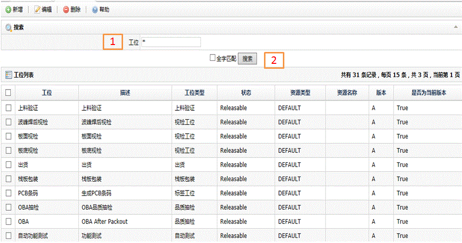
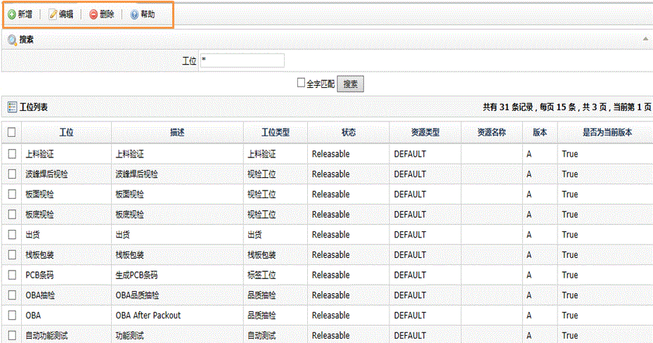
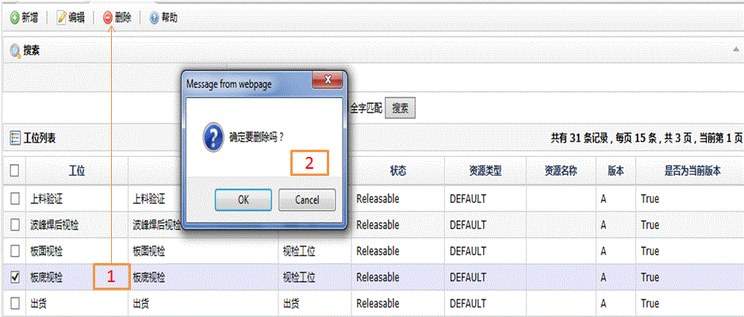

| 字段名 | 描述 |
| 工位 | 工位的名称 |
| 描述 | 工位的说明 |
| 工位类型 | 工位所属的类型 |
| 状态 | Releasable:释放状态，为可用状态； Frozen: 冻结状态，但不能更改。为可用状态； Obsolete:报废状态，为不可用状态； Hold: 暂停状态，为不可用状态； New:新添加的状态，为不可用状态，需要转化相关可用状态方可使用； Hold Consec NC：系统保留状态，为不可用状态； Hold SPC Viol：系统保留状态，为不可用状态； Hold SPC Warn:系统保留状态，为不可用状态； Hold Yield Rate:系统保留状态，为不可用状态； |
| 资源类型 | 资源所属类型 |
| 资源名称 | 工位使用的资源名称 |
| 版本 | 工位的版本 |
| 是否当前版本 | 是否是当前要使用的版本 |


